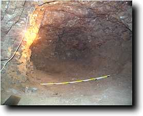
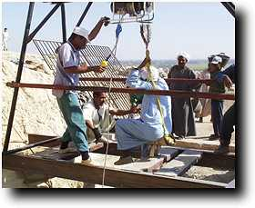
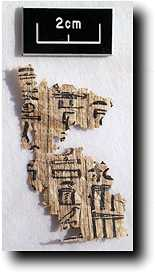
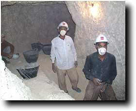
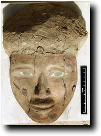

Saturday 19 December
Today has been hectic, and things have been happening left, right and centre. We started one job which needs to be completed before three members of the team return to the UK on Monday. This is the recording of the colours of the paintings which were cleaned in the 1997-8 season. This is done with a colourimeter, as in this photo.
For more information about this process see the section on Documenting Paintings. About 150 readings need to be taken, and we aim to finish the rest tomorrow.
There was also a lot of progress on other fronts. The room we have been excavating off Shaft H was cleared; here is a photo.
|

In the big shaft, we finally reached the end of the corridor around midday, and are going to concentrate on the route to the main burial chamber while we have the resources. What we thought was going to be a stairway turns out to have something like a shaft going through the middle of it. Most likely it is a series of a couple of large steps to get into the burial chamber, but we can't be sure. The workmen wanted our reis or foreman to have a look at it, so he found himself being winched down into it.

|
Sunday 20 December
I confess to being concerned that the pit-like approach to the big burial chamber is worrying me a little, but it turns out that the guess was correct and it was but a very large step. At this time in the 18th dynasty they do not seem to have developed the idea of sloping stepped passages, and I am sure I have seen other tombs in which the burial chambers are reached by a series of large steps. Examination of the debris in the burial chambers revealed another fragment bearing the name of Senneferi, this time of a coffin.
|  |
The occasional fragment of papyrus has been found. None of us are experts on this, but our guess is that it could be an 18th dynasty Book of the Dead. Here is one fragment.
|
We now have five men working underground in this shaft. Today is the first day of Ramadan, and the men work the day without the customary breakfast break, and finish a half hour early.
|

The other shaft continues to go down, and is producing lots of mummy parts and bandages.
Julie Dawson is winding up her conservation work for this year. Here is a photograph of a Third Intermediate Period coffin face which we found a few years ago and which was covered with mud. Julie has been cleaning this a little each season in spare moments, and the results are impressive.

|
Monday 21 December
Julie Dawson, Rebecca Hardy, Gillian Pyke left for the UK this morning. There is still a backlog of finds to process and catalogue, and we are doing our best to keep on top of this as well as doing everything else.
In the Senneferi shaft (I), we are now clearing the debris in the larger chamber. There is not a lot of material in it, but there are many fragments of black coffins (mid 18th dynasty) and 18th dynasty pottery. I made an experimental VR panorama of the room today for readers to get some idea of what the room is like (it's 212k in length).
Something we have noted in the burial chamber is the number of salt crystals growing on the surface of the rock. The presence of moisture which this indicates is one of the reasons why the paintings in these tombs have to be looked after and documented. The crystals themselves are strangely beautiful:
Progress in the other shaft seemed very slow today, although there was another mass of human remains to be dealt with (leaving us 12 boxes to sort tomorrow). At the end of the day, the top of a doorway was found at a depth of about 6.5 m, in the west side. This makes this shaft look more and more like the mystery second Mond shaft.
|
A couple of interesting finds. The first is a basket with a coloured pattern woven into it, while the second is a text on a piece of potsherd. At a quick glance the second looks as if it could have been an artist's guide for a text in a tomb scene, although not one which has survived in the tomb of Senneferi. An alternative is that it might come from a Canopic jar.
|

 The Dig Diary 1998--Part 6
The Dig Diary 1998--Part 6